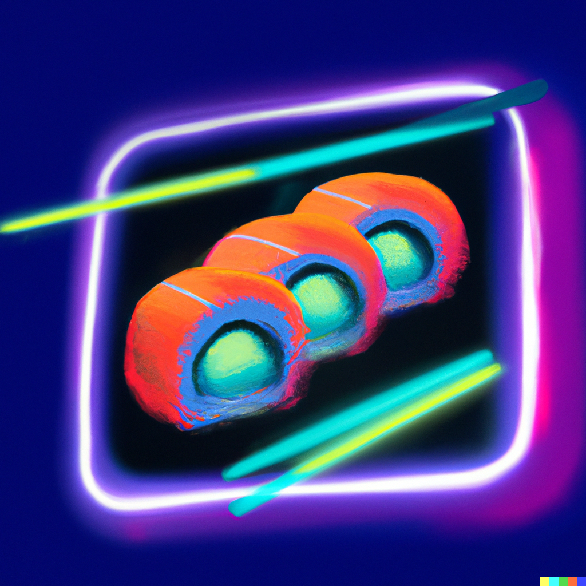

A vibrant sushi dish created with a 3D food printer
This sushi dish is a spectacle of colors, made with nutrient-infused rice, cultured fish or lab-grown protein, and printed using a 3D food printer.
Ingredients
- Nutrient-infused sushi rice
- Nori sheets
- Cultured fish (like salmon, tuna), or lab-grown meat/tofu for a vegetarian version
- Vegetables: pickled radish (for yellow), avocado (for green), beetroot (for purple)
- Edible neon food coloring (optional)
- 3D food printer
Recipe Instructions
- Prepare nutrient-infused sushi rice according to package instructions.
- If using, divide the cooked rice into separate bowls and mix in edible neon food coloring to create different vibrant colors.
- Slice your cultured fish/lab-grown meat/tofu and vegetables into thin strips.
- Using your 3D food printer, create your sushi by layering the colored sushi rice, nori sheets, and your choice of ingredients in the design of your choice.
- If a 3D printer isn't available, you can lay a nori sheet on a bamboo sushi mat, spread a layer of rice, and arrange your choice of ingredients. Roll the sushi tightly using the mat, then slice into bite-size pieces.
Return to top
Return to main page